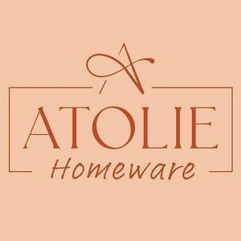

Trade Mark Journal No.2025/016 18 April 2025
WO0000001847645 (20,21,24)
Office of origin: Turkey
Date of International Registration:8 January 2025
Date of designation in the UK:
8 January 2025

International priority date claimed: 31 December 2024
(Turkey)
- Class 20
- Furniture, made of any kind of material mattresses; pillows; air mattresses and cushions, not for medical purposes, water beds, mirrors, beehives, artificial honeycombs and sections of wood for honeycombs, bouncing chairs for babies, playpens for babies, cradles, infant walkers, display boards, frames for pictures and paintings, identification plates, identification tags, nameplates, identification labels made of wood or synthetic materials, packaging containers of wood or plastics, casks for use in transportation or storage, barrels, storage drums, tanks, boxes, storage containers, transportation containers, chests, loading pallets and closures for the aforementioned goods, of wood or plastics, small hardware goods of wood or synthetic materials included in this class, furniture fittings, of wood or synthetic materials, door openers and closers, not of metal, ornaments and decorative goods of wood, cork, reed, cane, wicker, horn, bone, ivory, whalebone, shell, amber, mother-of-pearl, meerschaum, beeswax, plastic or plaster namely figurines, holiday ornaments for walls, sculptures, trophies baskets, fishing baskets kennels, nesting boxes and beds for household pets, portable ladders and mobile boarding stairs of wood or synthetic materials, bamboo curtains, roller indoor blinds [for interiors], slatted indoor blinds, bead curtains for decoration, curtain hooks, curtain rings, curtain tie-backs, curtain rods, non-metal wheel chocks.
- Class 21
- Hand-operated non-electric cleaning instruments and appliances, brushes, other than paintbrushes, steel chips for cleaning, sponges for cleaning, steel wool for cleaning, cloths of textile for cleaning, gloves for dishwashing, non-electric polishing machines for household purposes, brooms for carpets, mops, toothbrushes, electric toothbrushes, dental floss, shaving brushes, hair brushes, combs, non-electric household or kitchen utensils, included in this class, [other than forks, knives, spoons], services [dishes], pots and pans, bottle openers, flower pots, drinking straws, non-electric cooking utensils, ironing boards and shaped covers therefor, drying racks for washing, clothes drying hangers, cages for household pets, indoor aquariums, vivariums and indoor terrariums for animals and plant cultivation ornaments and decorative goods of glass, porcelain, earthenware or clay namely statues, figurines, vases, and trophies, mouse traps, insect traps, electric devices for attracting and killing flies and insects, fly catchers, fly swatters, perfume burners, perfume sprayers, perfume vaporizers, electric or non-electric make-up removing appliances, powder puffs, toilet cases, nozzles for sprinkler hose, nozzles for watering cans, watering devices, garden watering cans, unworked or semi-worked glass, except building glass, mosaics of glass and powdered glass for decoration, except for building, glass wool other than for insulation or textile use.
- Class 24
- Woven or non-woven textile fabrics, textile goods for household use, not included in other classes: curtains, bed covers, sheets (textile), pillowcases, blankets, quilts, towels flags, pennants, labels of textile, swaddling blankets, sleeping bags for camping; strip curtains.
CEREN TUĞRUL TEK
Representative: HURİ AĞAR AÇILIM MARKA PATENT VE DANIŞMANLIK HİZMETLERİ LTD. ŞTİ., KÜLTÜR MAH. MEŞRUTİYET CAD. FATİH,, APT. NO:41 K:3 D:11, KIZILAY/ANKARA, TURKEY